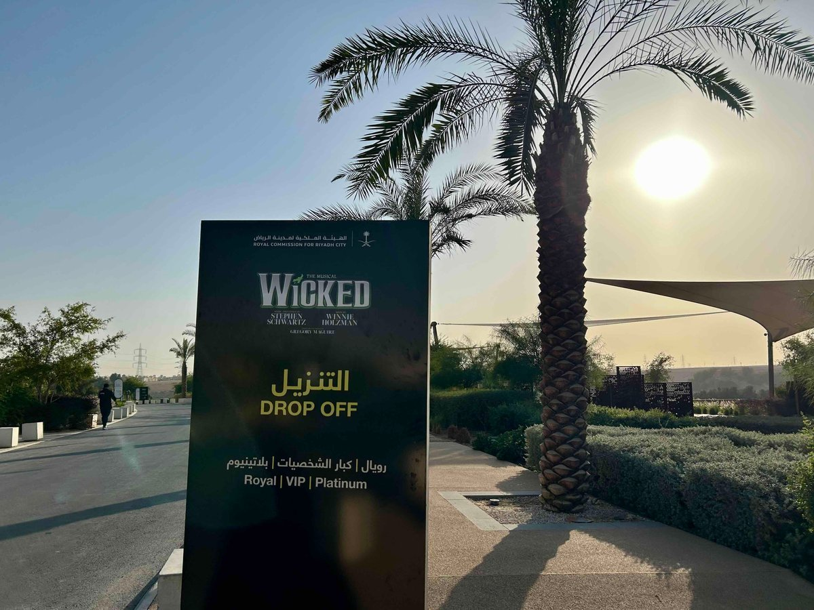
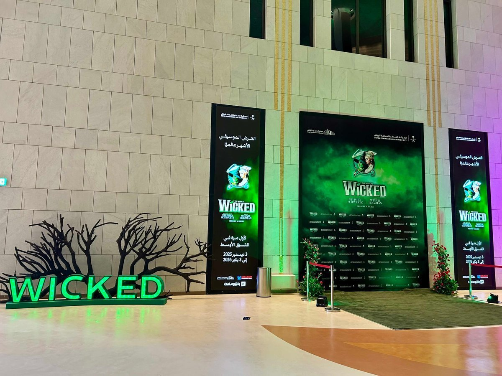
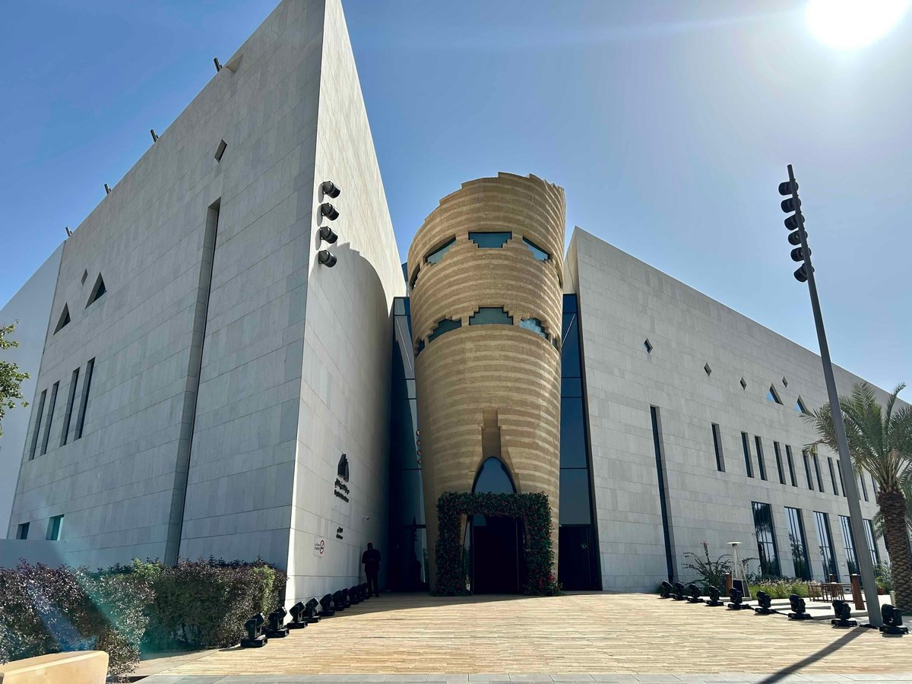
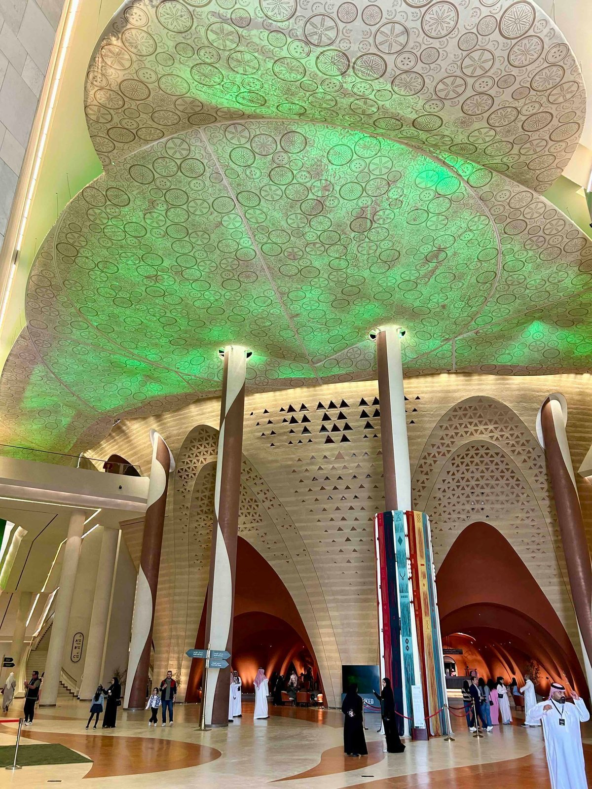
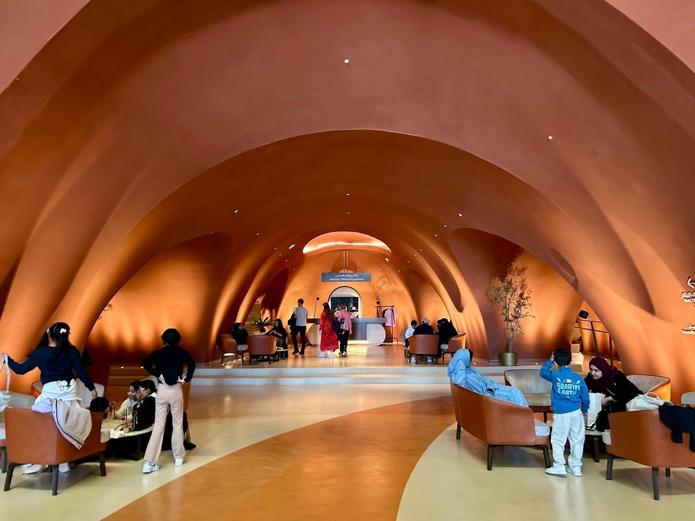
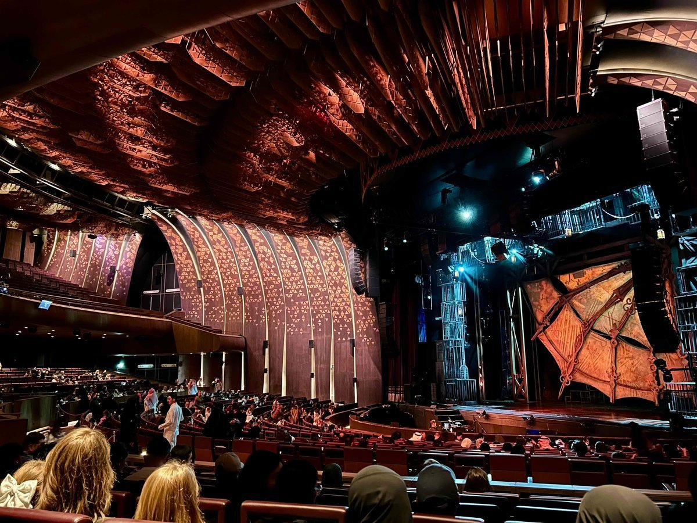
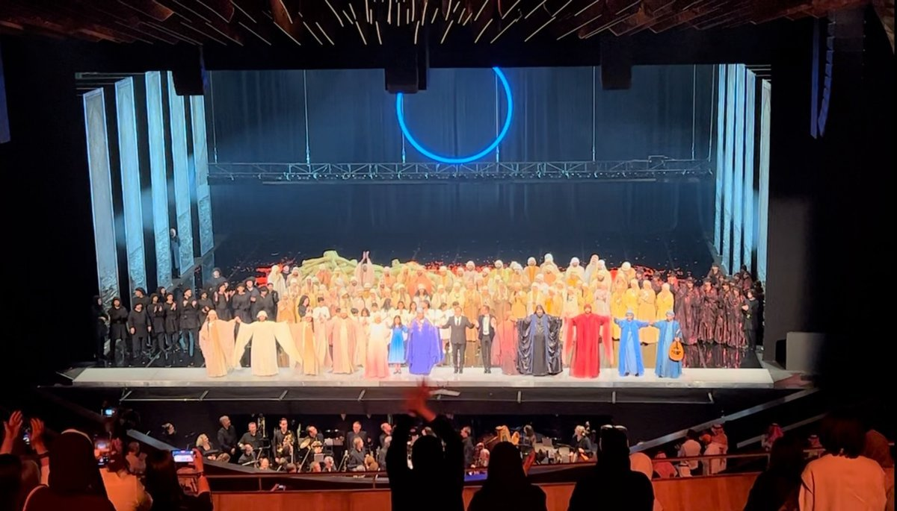

브로드웨이 대표 뮤지컬 〈위키드(Wicked)〉가 사우디아라비아 리야드(Riyadh)에서 2025년 12월 3일부터 2026년 1월 3일까지 진행된 공연 일정을 마무리했다. 이번 공연은 리야드 도시 개발과 문화정책을 담당하는 리야드 왕립위원회(Royal Commission for Riyadh City, 이하 RCRC)가 브로드웨이 엔터테인먼트 그룹(Broadway Entertainment Group, 이하 BEG)과 협력해 중동 지역 최초로 유치·상연한 글로벌 뮤지컬이다. 리야드의 킹 파하드 컬처 센터(King Fahad Cultural Center)에서 열린 이 공연은 당초 2025년 12월 3일부터 20일까지 예정돼 있었으나, 관객 수요에 따라 2026년 1월 3일까지 공연 기간이 연장됐다. 공식 매체에 따르면 이번 공연은 약 3만 명의 관객을 동원했다.


▲ 리야드에서 열린 뮤지컬 〈위키드〉 공연 현장 — 출처: 통신원 촬영
뮤지컬 〈위키드〉는 전 세계에서 오랫동안 사랑 받아온 작품으로, 리야드에서는 〈오페라의 유령(The Phantom of the Opera)〉에 이어 두 번째로 선보인 대형 해외 뮤지컬이다. 리야드 왕립위원회(RCRC)와 브로드웨이 엔터테인먼트 그룹(BEG)은 본 공연을 사우디 비전 2030(Vision 2030)의 '삶의 질(Quality of Life)' 프로그램과 연계하여 추진했으며, 이는 사우디가 문화·공연 인프라 확대를 정책적으로 추진하고 있음을 보여준다.
국제 대형 공연 유치와 사우디 공연 환경
해당 공연이 열린 킹 파하드 컬처 센터는 연극, 음악, 오페라, 국제 콘퍼런스 등 다양한 행사를 수용할 수 있는 대형 복합 문화시설이다. 이 시설은 나즈디(Najdi) 특유의 전통 건축에서 영감을 받은 외관에 현대적인 무대 및 음향 설비를 결합한 구조를 갖추고 있다. 주 공연장은 약 2,750석 규모로 대형 뮤지컬과 오페라, 오케스트라 공연이 가능하며, 사우디아라비아 문화부(Ministry of Culture) 산하의 문화 인프라로 운영된다.

▲ 킹 파하드 컬처 센터 전경 — 출처: 통신원 촬영


▲ 킹 파하드 컬처 센터 내부 — 출처: 통신원 촬영
통신원이 직접 방문한 공연 현장에서는 가족 단위 관람객을 비롯해 다양한 연령층의 관객이 눈에 띄었다. 공연을 관람하던 중, 일부 관객들은 어린이 관객의 말소리로 인해 공연에 집중하기 어려웠다고 이야기하며 종종 관객이 자리를 이동하거나 휴대전화를 사용하는 등으로 인해 불편을 겪었다는 아쉬움을 전했다. 한편 현지 관객 인터뷰에서는 좌석 가격대에 따라 관람 분위기에 차이가 있다는 의견도 확인됐다. 또한 회차에 따라 객석 점유율에 차이가 나타났으며, 일부 회차에서는 빈 좌석이 눈에 띄기도 했다. 이러한 관람 양상은 사우디의 공연 관람 문화와 관객의 태도 기반이 아직 형성 단계에 있음을 보여준다.

▲ 공연장 내부 전경 — 출처: 통신원 촬영
이번 웨스턴 대형 뮤지컬 공연 외에도 2025년 9월에는 중국 국립 오페라단(National Opera of China)의 오페라 〈카르멘(Carmen)〉이 같은 공연장에서 상연되는 등, 지속적으로 저명한 국제 공연을 초청하는 방식으로 이어져 왔다. 아울러 자국 창작 공연 면에서는 사우디 최초의 오페라인 〈자르카 알 야마마(Zarqa Al Yamama)〉가 2024년 4월 동일한 공연장에서 초연됐으며, 통신원 역시 해당 공연을 직접 관람했다.

▲ 2024년에 제작된 사우디 최초 오페라 〈자르카 알 야마마(Zarqa Al Yamama)〉 커튼콜 — 출처: 통신원 촬영
이처럼 해외의 라이선스(License) 공연과 자국의 창작 공연이 같은 무대에서 연이어 개최되는 모습은 리야드의 공연예술 환경이 다양성의 측면에서 확장되고 있는 초기 흐름을 보여준다. 더 나아가 사우디에서는 뮤지컬과 오페라뿐 아니라 코미디 등 라이브 엔터테인먼트 분야로도 공연 장르가 확대되고 있는 중이다. 2025년 9월부터 10월까지 리야드 블러바드 시티(Boulevard City)에서는 케빈 하트(Kevin Hart), 러셀 피터스(Russell Peters) 등 세계적인 코미디언들이 참여한 대규모 리야드 국제 코미디 페스티벌이 개최됐다.
사우디 공연 문화 산업의 방향과 전망
사우디에서는 공연 제작을 지원하는 제도적 프로그램도 운영되고 있다. 사우디 문화부 산하 사우디 연극·공연예술위원회(Theatre and Performing Arts Commission)는 2022년부터 '시타르(SITAR)' 프로그램을 통해 연극 및 공연예술과 관련된 제작 지원을 제공하고 있다. 해당 프로그램은 2022년 9월부터 2030년 12월까지 리야드를 중심으로 운영되며 공연예술 분야의 기업, 기관, 단체, 커뮤니티 극단 등을 대상으로 한다. '시타르(SITAR)'는 선정된 프로젝트에 제작 지원을 제공하는 방식으로 신청서 심사와 자격 요건 검토, 평가 기준에 따른 선발 과정을 거쳐 지원 대상이 결정된다. 이를 통해 제작 주체들이 창작 과정에서 불확실한 공연 일정이나 관객 모집 등과 같은 불안 요소들을 일부 해소하고, 작품의 완성도와 공연예술 분야의 경제적 지속성을 함께 강화하는 데 목적을 두고 있다.
리야드에서 열린 〈위키드〉 공연을 통해 살펴본 사우디 공연 문화 산업의 현재는 본격적인 실험 단계에 접어든 모습을 드러낸다. 관람 문화, 유통 구조, 가격 전략 등의 문제로 인해 사우디의 공연 문화 산업은 아직은 초기 단계에 머물러 있으나, 글로벌 공연 콘텐츠를 수용할 수 있는 인프라와 제도적인 관심은 분명히 확인된다. 대형 해외 뮤지컬 유치와 자국 공연 제작, 정책 지원이 동시에 진행되고 있는 흐름은 향후 한국 공연 콘텐츠가 중동 시장과 만날 수 있는 가능성 역시 확대하고 있음을 시사한다. 사우디 공연 생태계의 점진적인 축적은 리야드가 중동 지역의 공연예술 중심지로서 역할을 강화할 수 있는 잠재력도 함께 보여준다.
사진 출처 및 참고자료
통신원 제공
리야드 왕립위원회(RCRC) X 계정(@RiyadhCitySA), x.com/RiyadhCitySA
사우디 연극·공연예술위원회 공식 웹사이트, performingarts.moc.gov.sa
퀄리티 오브 라이프 프로그램, vision2030.gov.sa
≪리야드 왕립위원회≫ (2025.10.28). RCRC Extends Run of Global Hit Musical 'Wicked' in Riyadh, rcrc.gov.sa
≪아랍아메리카≫ (2025.12.10). From Oz to Riyadh: "Wicked" Arrives in Saudi Arabia, arabamerica.com
≪리야드 왕립위원회≫ (2025.8.21). RCRC Brings Famous Opera "Carmen" to Riyadh, rcrc.gov.sa
≪더 내셔널≫ (2024.1.13). Zarqa Al Yamama: Saudi Arabia Announces Its First Grand Opera, thenationalnews.com